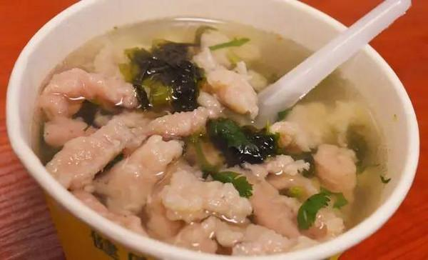
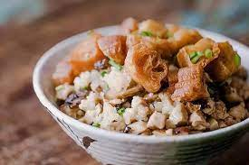
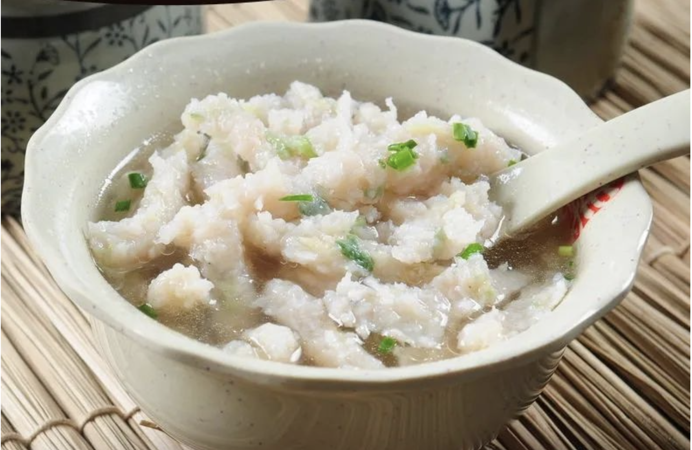

Wenzhou cuisine is known for its fresh ingredients, delicate flavors, and unique cooking techniques. It
showcases the essence of Zhejiang cuisine and offers a wide variety of dishes that are both delicious
and visually appealing.
Our Menu

Wenzhou Thin Meatballs
Thin slices of meat cooked in a flavorful broth, served with a variety of toppings. A popular
street snack in Wenzhou.

Wenzhou Glutinous Rice
Aromatic glutinous rice mixed with minced meat soup and shredded dough sticks. A delightful
breakfast dish in Wenzhou.

Wenzhou Fish Ball
Translucent fish balls served in a clear and slightly spicy broth. A famous local snack in
Wenzhou.